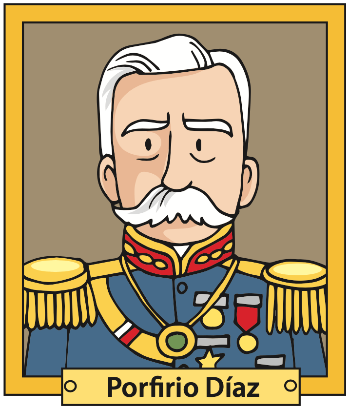

Ubico el Porfiriato
Panorama del periodo
Ordena los eventos cronológicamente colocando los números del 1 al 4. Consulta las páginas 78 y 79 de tu libro de texto SEP.
Revolución Mexicana.
Segundo periodo presidencial de Porfirio Díaz (dictadura).
Presidencia de Manuel González.
Primer periodo presidencial de Porfirio Díaz.

Coloca las respuestas en cada línea.
La dictadura de Porfirio Díaz duró:
Porfirio Díaz comenzó a gobernar durante el siglo:
La presidencia de Manuel González duró:
Colorea el conjunto de estados según el color del caudillo que le corresponde. Consulta el mapa de la página 79 de tu libro de texto SEP.